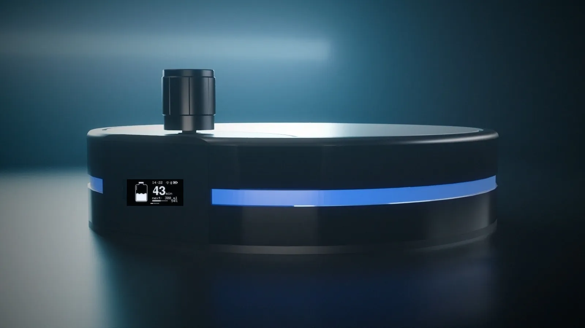

Mirrored, rising like water
Every pattern is drawn on one half and mirrored, so fills, ripples and comets rise up both sides together, from the front to the back.
12 LEDs · one colour per meaning
Around the side of the base runs a ring of 12 RGB LEDs. Every colour means one thing, so a glance across the room tells you what BottleMate is saying. No rainbow cycling, ever.

Every effect
These animations run the same maths as the base's firmware: the 12 LEDs form two mirrored halves that rise from the front (by the screen) to the back.
Start-up
When BottleMate powers on, aqua light fills both sides from the front to the back, then fades.
How the ring decides
Every pattern is drawn on one half and mirrored, so fills, ripples and comets rise up both sides together, from the front to the back.
Highest priority first: preview, find my base, pairing, a one-off event, a reminder, a scale fault, bottle lifted, then the optional progress glow.
Off, Low, Medium or High, plus notifications on or off and a progress glow, in Menu › Display or in the app. Quiet hours stay dark.
| Aqua | Water: start-up sweep, sip ripple and fill, bottle lifted or put back, today's progress glow |
|---|---|
| Pink | Time to drink (a slow tide) |
| Blue → aqua | Refill |
| Gold | Daily goal reached |
| Green | Phone: pairing comet, connected flash |
| Orange | Calibrating |
| Warm white | Find my base (from the app) |
| Red | A problem: the scale doesn't answer |
| Purple | Demo mode switched on |